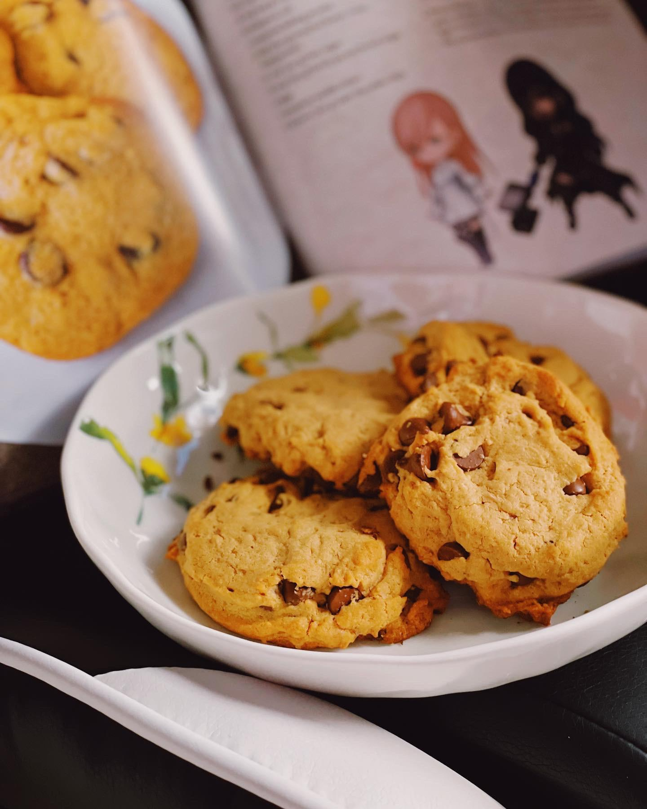

Coffee Biscuits

Description
Looks like an ordinary chocolate chip cookie, but it has a hidden espresso twist.
Enjoy these buttery treats with your morning coffee - or tea if that's your jam!
Unfortunately, there is no gluten-free recipe available at this time.
Prep Time: 45 minutes
Rest Time: 1 hour
Cook Time: 15 minutes
Makes: 24 cookies
Ingredients
- 1 tablespoon espresso powder
- 1 tablespoon hot water
- 21⁄2 cups (390g) all-purpose flour
- 1⁄4 cup (45g) whole wheat flour
- 1⁄4 teaspoon salt
- 1 teaspoon baking powder
- 1 cup (250g) unsalted butter, room temperature
- 1⁄2 cup (130g) beet sugar
- 1⁄2 cup (105g) firmly packed brown sugar
- 2 eggs
- 1 teaspoon vanilla extract
- 8 ounces (250g) dark chocolate chips
Steps
- In a small bowl, whisk together the espresso powder and hot water.
- In a medium bowl, combine the all-purpose flour, whole-wheat flour, salt, and baking powder.
- In a large bowl, combine the butter, beet sugar, and brown sugar, mixing until smooth.
- Add the eggs, vanilla, and espresso powder mixture.
- Slowly mix in the flour mixture until the dough just comes together, then fold in the chocolate chips.
- Line two baking sheets with parchment paper, then divide the dough into balls of approximately 21⁄2 tablespoons (50g) and place on a prepared baking sheet. Using the palm of your hand, gently press each ball down on the parchment paper to make a thick disk. Refrigerate the baking sheets for 1 hour.
- Preheat your oven to 350°F (180°C). Line a room-temperature baking sheet with parchment paper, then place the chilled cookies on the baking sheet 2 inches (5cm) apart.
- Bake the cookies until they have slightly spread and the edges are golden brown, or about 15 to 20 minutes. Let them completely cool before consuming.